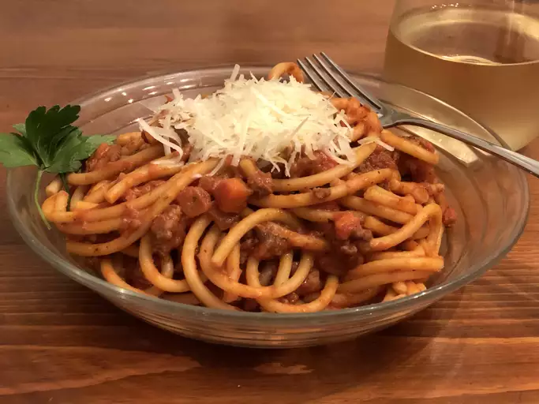

Spaghetti Bolognese

Description
This hearty Spaghetti Bolognese is a family favorite, featuring a rich meat sauce made with ground beef, tomatoes, and herbs, served over al dente spaghetti. It’s perfect for a comforting meal any day of the week!
Ingredients
- 400g spaghetti
- 500g ground beef
- 1 onion, chopped
- 2 cloves garlic, minced
- 1 can (400g) diced tomatoes
- 2 tablespoons tomato paste
- 1 teaspoon dried oregano
- Salt and pepper to taste
- Fresh basil for garnish (optional)
Steps
- Cook spaghetti according to package instructions until al dente.
- In a large skillet, heat oil over medium heat. Sauté onion and garlic until softened.
- Add ground beef and cook until browned, breaking it up with a spoon.
- Stir in diced tomatoes, tomato paste, oregano, salt, and pepper. Simmer for 20 minutes.
- Serve sauce over spaghetti and garnish with fresh basil if desired.